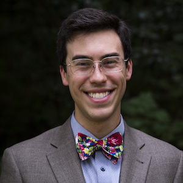

Email: 
Debra got her PhD in entomology, study the systematics of neotropical butterflies. Debra is involved in myriad projects in the Magwene lab, most prominently our ongoing QTL mapping and experimental evolution projects. In addition to her research, Debra is in charge of ordering, lab safety, and generally helping to keep the trains running on time!
Email: dm125@duke.edu
Undergraduate Students
Are you a Duke undergrad interested in research? Contact us!
Previous Members of the Lab
- Selcan Aydin (postdoc, 2017-2018) -- currently postdoc, Jackson Laboratory.
- Daniel Skelly (postdoc, 2013-2016) -- currently associate research scientist, Jackson Laboratory.
- Colin Maxwell (grad student, PhD 2016) -- postdoc with Chase Beisel, North Carolina State University.
- Omur Kayikci (grad student, PhD 2013) -- postdoctoral fellow, Princeton and University of Chalmers, Sweden.
- David McCandlish (grad student, PhD 2012) -- Assistant Professor, Cold Spring Harbor Laboratory.
- Christopher Davis (grad student, MS 2016)
- Helen Murphy (postdoc) -- currently Assistant Professor, Department of Biology, College of William and Mary. Helen's Website.
- Joshua Granek (postdoc) -- currently Assistant Professor, Department of Biostatistics and Bioinformatics, Duke. Josh's Website.
- Jeni Reininga (postdoc) -- currently Research Development Associate, Duke University School of Medicine.
- Ann Rouse (short term postdoc)
- Xianrui Cheng (rotation)
- Rick Dilling (rotation)
- Nick Davis (rotation)
- David Garfield (rotation)
- Justin Guinney (rotation)
- Karthik Jayasurya (rotation)
- Shannon McDermott (rotation)
- Edgar Medina (rotation)
- Ryan Muraglia (rotation)
- Martin Requena (rotation)
- Kriti Sharma (rotation)
- Ken Yokoyama (rotation)
- Selcan Tuncay (summer undergrad from Sabanci University,Turkey) -- now a graduate student at Duke (Buchler lab)
- Ritu Jayakrishnan (undergrad honors thesis)
- Rosa Yang (undergrad honors thesis)
- Sandy Ren (undergrad honors thesis)
- Irvin Wang (undergrad honors thesis)
- Howard Chen (undergrad honors thesis) -- currently doing a Clinical residency at UPenn, following completion of med school at Harvard
- Coulter Knapp (undergrad independent study)
- Jay Ramesh (undergrad independent study)
- Lisa Warner (undergrad independent study)
- Tim Goodman (undergrad independent study)
- Michael McLaughlin (undergrad independent study)
- Nick Patrick (summer undergrad) -- MBA at Harvard
- Makesi Sutton (summer undergrad) - med school (Univ. Connecticut)
- Keisha Carlson (summer undergrad) - grad school University of Washington
- Zee Pittman (lab tech)